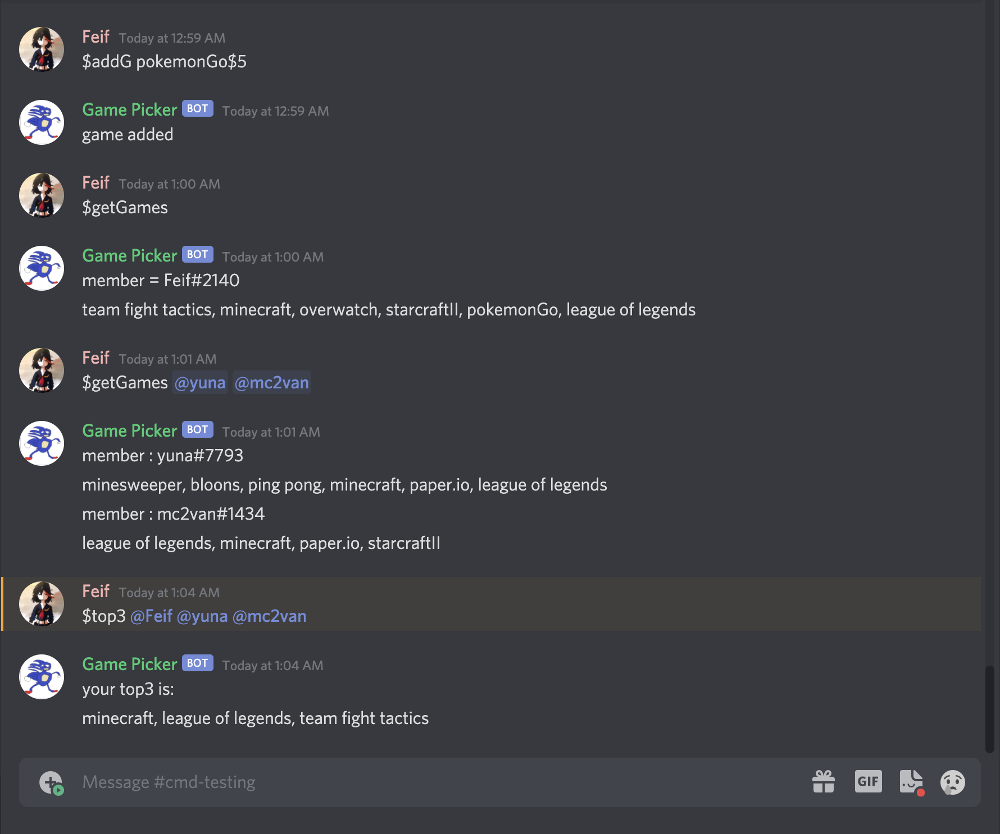
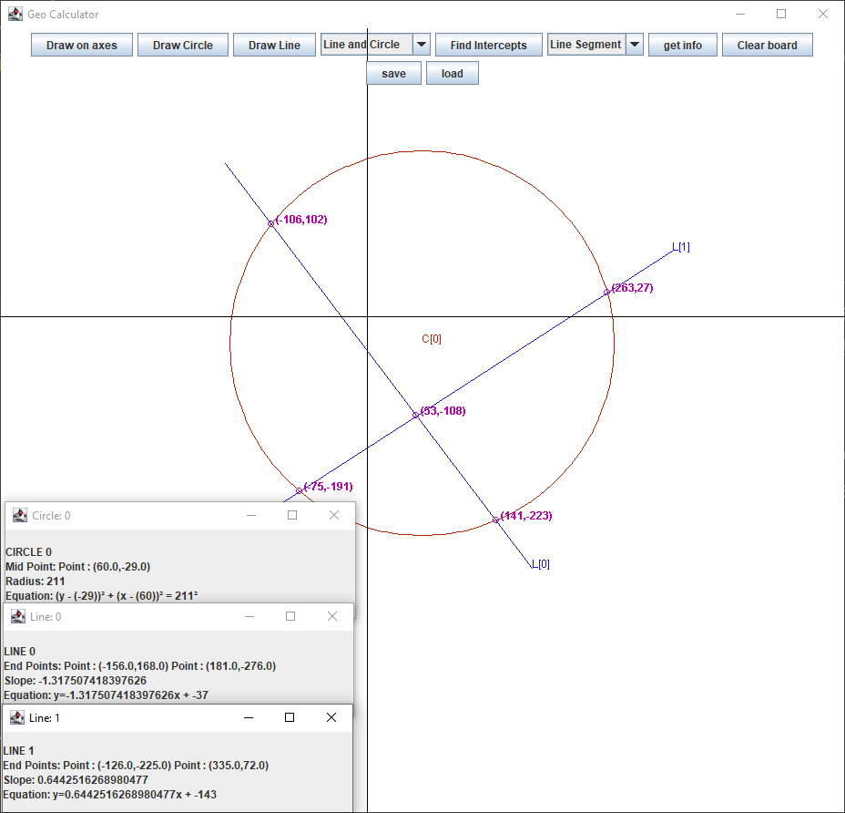
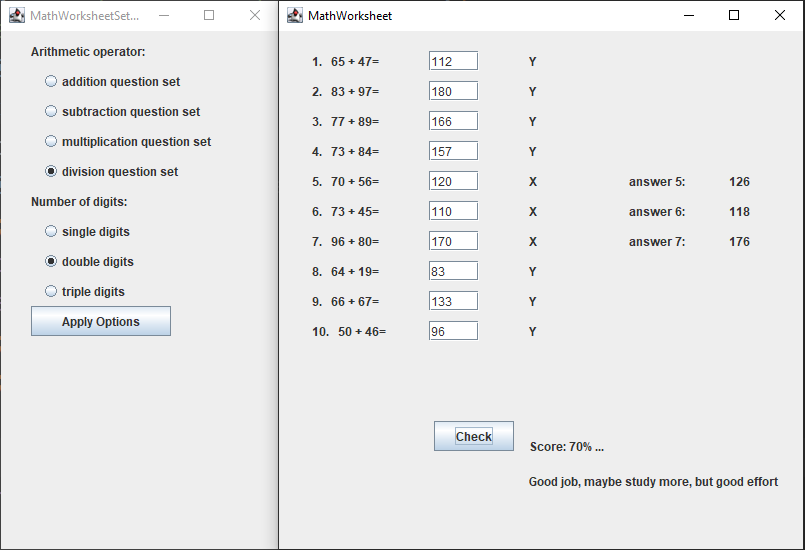

Hello,
my name is Yanni and welcome to my website!
I'm currently a first year studying Computing and Financial Management at the University of Waterloo.
I am an aspiring software engineer with and interest in fintech.
Work aside, some of my hobbies include skatboarding, playing sports, and video games.
My Projects
Since first being introduced to CS last year, I've been able to code a handful of projects both as a method of mastering
the languages and a way to showcase my programming capabilities. Here are some of my favorite solo projects:)
Game-Picker Discord Bot
I coded a Discord Bot using the discord.py API that is capable of computing for the best game to play between a group of friends.
The bot works by having users input their games with a numerial rank with 1 being the game they want to play the most,
then adding up the ranks for each game given by all the friends and returning games with the lowest summed rank.
The inspiration for this bot came from a personal dilemma. Often times when me and my friends wanted to hang out and play
video games, we would spend forever deciding on a game. So I decided to code a bot that would make the tough decision for us
so that we could skip to the fun part of just playing! Even though the bot was created to rank games there's no restriction
to use the bot to choose: movies, sports, dinner ideas etc.

Geo Calculator
I built an interactive graphical calculator GUI in Java Swing using OOP principles to visually demonstrate math concepts.
This app allows users to draw numerous line-segments and circles, and change the axis origin using their mouse pointer.
You can also get relevant mathematical information which changes with the origin location such as:
- Points of Intersection
- The equation to the line-segment or circle
- Start/End Point coordinates
- Circle Radius

Math Worksheet Generator
I created a GUI in Java Swing using OOP principles that randomly generates math questions to solve.
There are multiple ways to customize the questions that you can get such as operator type and
the number of digits you want to work with (ones tens or hundreds)
